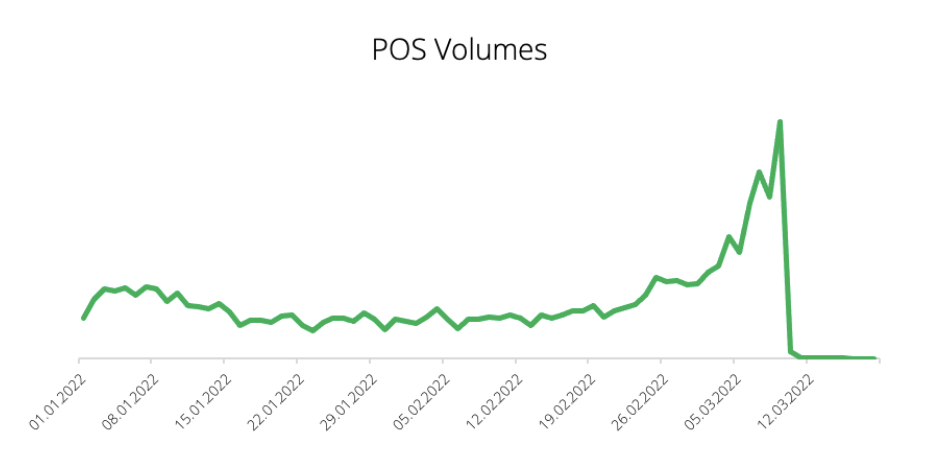
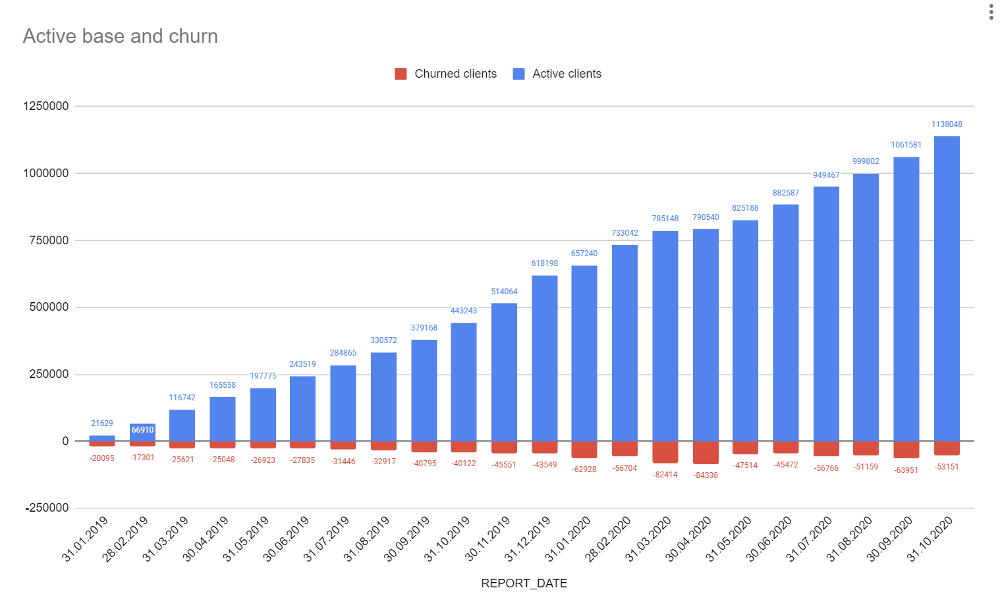
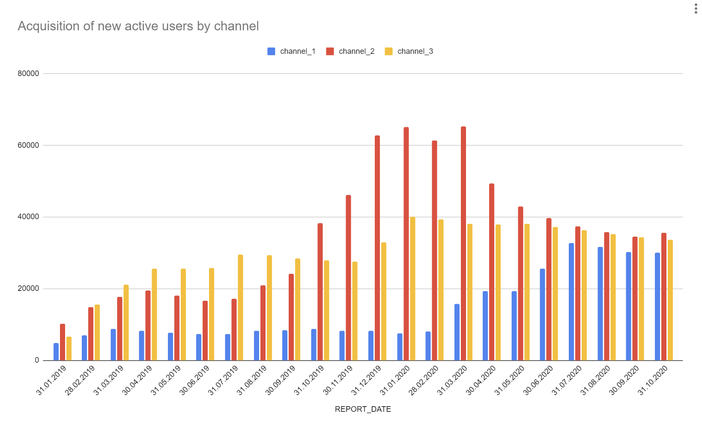
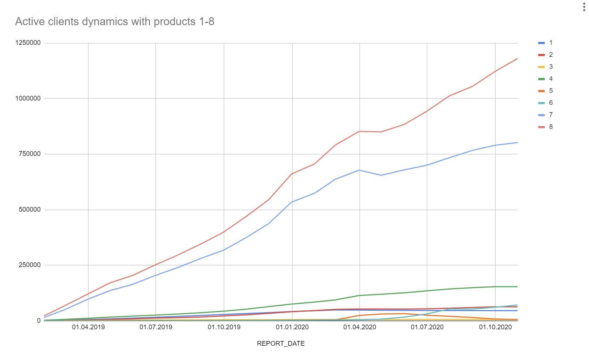
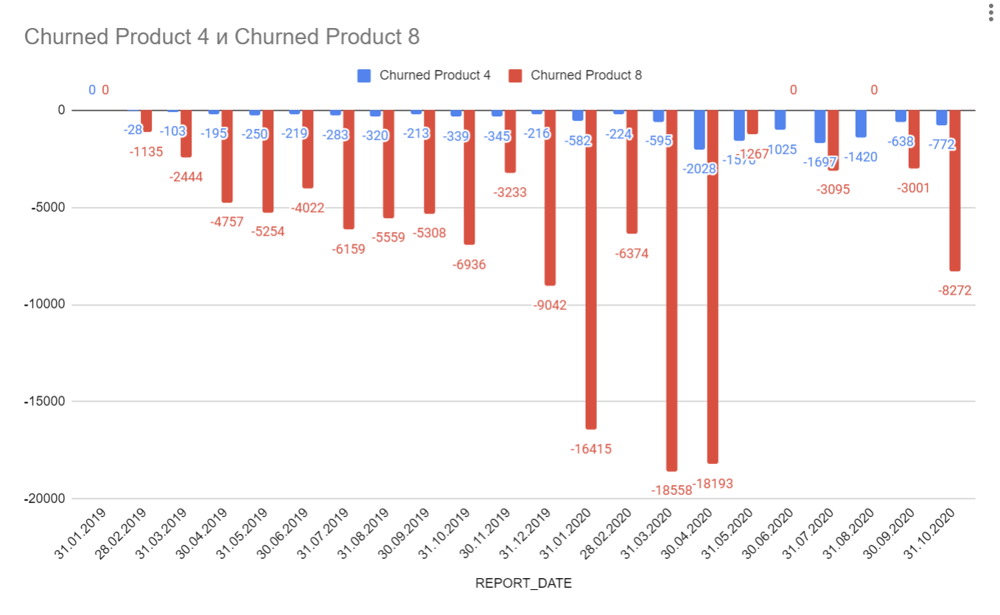
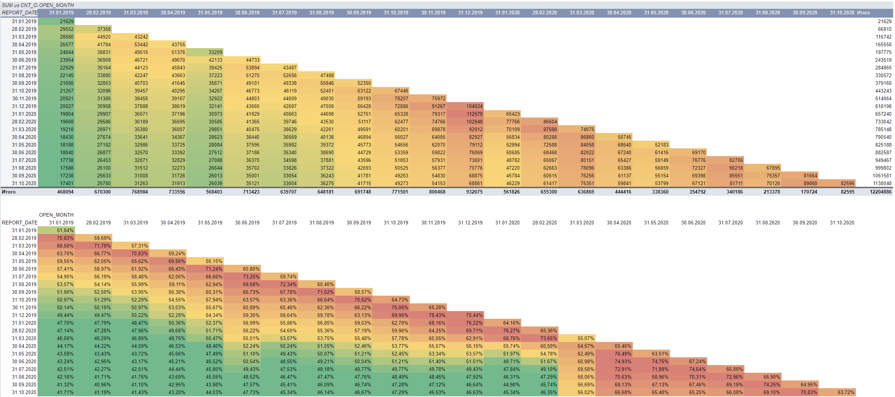
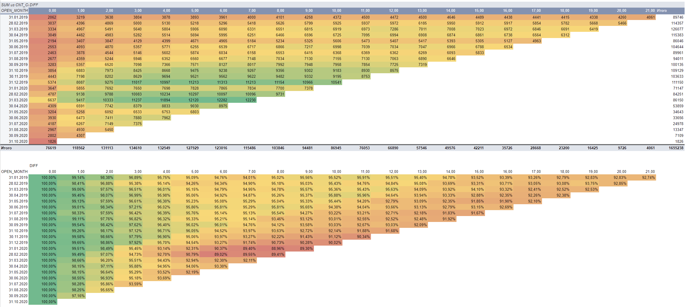
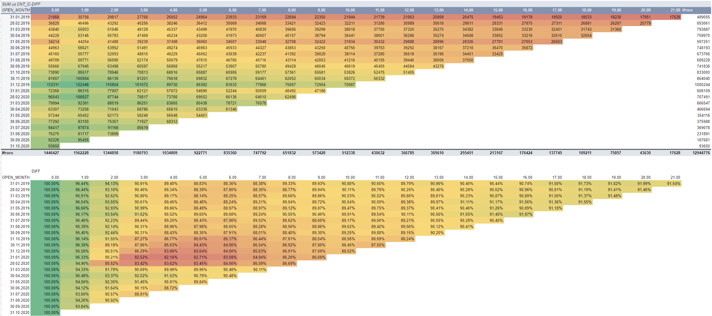

import psycopg2
conn = psycopg2.connect(host='localhost', port='5432', dbname='postgres', user='postgres', password='1234')
cur = conn.cursor()Тестовое задание
I.
Далее приведен график объемов карточных трат клиентов за некоторый период 2022 года
Предположи, что это могли быть за траты и почему они упали до 0?

Ответ
Где-то в районе 5-ого марта было объявлено, что 10-ого марта пользоваться российскими картами заграницей будет невозможно, поэтому все срочно начали тратить остатки средств, и 10-ого транзакции прекратились.
С сайта Райффайзен банка (https://www.raiffeisen.ru/wiki/chto-proiskhodit-s-platezhnymi-sistemami/):
Что будет с картами за границей
<< С 10 марта карты, выпущенные в российских банках, не принимают за пределами страны. Они не срабатывают ни в банкоматах, ни в POS-терминалах. Такими картами нельзя оплатить покупки в иностранных онлайн-магазинах и приложениях, подписку на зарубежное ПО или приложения в Google Play и Apple Store. При попытке ввести реквизиты российского платежного средства, система выдает сообщение об ошибке. Держателям могут быть недоступны международные переводы с одной карты на другую.
Поскольку о полном прекращении работы платежных систем в России речи не идет, есть вероятность, что когда-нибудь обслуживание восстановится. В таком случае карты снова начнут действовать автоматически — заказывать перевыпуск не придется. >>
II.
Есть бизнес-задача подготовить клиентский оффер с повышенным кэшбэком на категории, направленный на рост метрики Merch4.
Merch4 - % клиентов от активной базы, совершающих покупки по дебетовой карте в 4+ разных категориях (пример мерчантов: аптеки, кафе, супермаркеты и т.д)
Опиши, какие данные и их разрезы потребуются для анализа, чтобы определить условия оффера, дающие максимальный эффект на Merch4. Для анализа тебе доступны: 1. данные по карточным операциям: - дата операции - сумма операции - МСС-код - Merchant name - ID клиента - Product name
- Данные по клиентам:
- ID клиента
- сегмент клиента
- флаг (новый/действующий клиент)
Рассмотрим гипотезы о том, как можно повысить метрику Merch4, и в зависмости от них выделим данные и срезы
1. Увеличение кэшбэка в определенных категориях:
Гипотеза: Предложение клиентам ограниченного, но стабильного кэшбэка в категориях, где они уже активны, поддержит удержание клиентов в этих категориях. В тех категориях, где клиент еще не активен (не достиг 4+ разных категорий), предложение более высокого кэшбэка создаст дополнительный стимул для клиентов попробовать что-то новое.
Использование данных: Анализ средней суммы транзакций в каждой категории и определение популярных МСС-кодов и мерчантов в этих категориях.
2. Персонализированные предложения для новых клиентов:
Гипотеза: Предоставление персонализированных кэшбэк-предложений новым клиентам в их первые месяцы использования карты может стимулировать активность в нескольких категориях.
Использование данных: Идентификация новых клиентов по флагу и анализ их покупок в первые месяцы. По сегменту клиента определяем априорное распределение наиболее релевантных МСС-кодов
3. Бонусы за многократные транзакции в разных категориях:
Гипотеза: Предоставление бонусов или дополнительного кэшбэка за совершение транзакций в 4+ разных категориях может стимулировать клиентов расширять свой спектр покупок.
Использование данных: Анализ средней суммы транзакций по когортам МСС-кодов. Определение порога по ревенью для возможности дать бонус в зависимости от общей суммы операций за несколько последних месяцев
4. Рекомендации на основе истории покупок:
Гипотеза: Использование данных по предыдущим транзакциям для предоставления рекомендаций о покупках в новых категориях может расширить интерес клиентов.
Использование данных: Распределение мерчантов по датам операций
5. Сезонные и временные предложения:
Гипотеза: Предоставление временных акций и повышенных кэшбэков в определенные периоды года может стимулировать покупки в разных категориях в соответствии с сезонными трендами.
Использование данных: Сумма и количество операций по когортам в месяцах оплаты
6. Кампании с участием мерчантов:
Гипотеза: Сотрудничество с ключевыми мерчантами для проведения совместных кампаний и предоставление специальных кэшбэк-предложений может привести к увеличению покупок в разных категориях.
Использование данных: Распределение мерчантов по кол-ву и сумме операций за всё время
III.
Эксперимент про внедрение опроса CSAT с экрана успеха
У нас в Банке для измерения лояльности используется NPS, но эта метрика обладает рядом ограничений например таких, как низкая чувствительность. Поэтому у нас возникла идея внедрить наряду с NPS измерение CSAT для переводов и платежей.
Механика следующая: пользователь совершает платеж, и на экране успеха появляется кнопка, нажав которую, пользователь может поставить оценку от 1 до 5 и оставить комментарий.
Важным этапом внедрения является измерение отклика у пользователей, т.е. ответ на вопрос - будут ли пользователи вообще оставлять обратную связь?
Опиши дизайн данного а/в
Шаг 1. Определение целей и ключевой метрики
Измерить, насколько успешно новая механика оценки CSAT стимулирует пользователей оставлять обратную связь.
Ключевая метрика: конверсия в оставление обратной связи
Гипотеза: если добавим механику CSAT в дополнение к NPS, то увеличится конверсия в оставление обратной связи, так как удовлетворённость одной оказанной услугой выразить проще, чем всей компанией в целом
Шаг 2. Разделение на группы
Пользователей разделим на две равные группы. Группа A будет представлять собой контрольную группу, которая продолжит использовать только NPS для измерения лояльности. Группа B будет экспериментальной группой, которая получит новую механику оценки CSAT после совершения платежа.
Целевой группой будет вся активная база, включая как старых, так и новых клиентов, так как негативного влияния ни на один из приведённых типов не ожидается.
Шаг 3. Определяем размер выборки по каждой группе
Общаемся с ПМом и выясняем, какой минимальный эффект на ключевую мметрику мы ожидаем увидеть, и который будет возможно зафиксировать за ограниченное время (которое тоже является объектом дискуссии).
Выбираем уровень значимости и мощность теста. Так как из постановки гипотезы совсем неясно, будет ли вообще присутствовать положительный эффект, то берём двусторонний тест с как можно меньшим уровнем значимости (ошибкой I рода). Скорее всего будем ожидать увидеть абсолютное изменение конверсии <1%, что потребует достаточно больших размеров выборки.
Стат. критерий – стандартный для сравнения конверсий z-тест
Шаг 4. Определяем доплнительные метрики, которые будут трекать процесс
В дополнении к ключевой метрике, нужно составить список косвенных метрик, которые можно отслеживать для валидации того, что с тестом всё в порядке.
Примеры косвенных метрик: * Время, затраченное на оценку – сколько времени пользователи тратят на оценку после завершения платежа * Количество повторных оценок – насколько пользователи привыкают к новой механике * Корреляция с NPS – есть ли зависимость между двумя метриками * Конверсия в выбор оценки – есть ли проблемы с переходом в следующее диалоговое окно * Отношение положительных и отрицательных отзывов – используется ли новая механика только для выражения одного типа удовлётворенности взаимодействием
Шаг 5. Кросс-ревью с товарищами
Проверка на очевидные пробелы и ошибки в дизайне
Шаг 6. Техническая реализация, запуск теста и дебаг сразу после запуска
Проверяем с помощью трекинговых метрик, что всё работает как ожидалось
Шаг 7. Поддержка и завершение теста при наборе достаточной выборки
Наблюдаем за краткосрочными и долгосрочными временными эффектами (может быть повышенный интерес при запуске), ждём устаканивания динамики и после набора необходимого размера выборки завершаем тест.
Так как тест создавался двусторонним, мы не удивимся, увидев уменьшение конверсии. При накоплении негативного эффекта можно досрочно остановить проведение теста
Шаг 8. Оценка результатов
Проверяем стат. значимость увеличения конверсии и ставим вопрос о внедрении при успешном исходе.
IV.
Перед тобой 2 таблицы. Первая содержит информацию о пополнениях клиентами своих рублёвых или валютных счетов, во второй содержатся курсы некоторых валют на дату.
Ответьте на следующие вопросы используя python или SQL (приложите код решения):
- Выведите максимальный размер пополнения в долларах за неделю, начинающуюся 6-го февраля.
- Выведите средний размер пополнений за февраль понедельно, в разбивке по валютам. Результатом должна быть таблица формата «Год-номер недели, валюта, размер пополнения (с округлением до целого числа)».
- Посчитайте долю клиентов, у которых были пополнения в нескольких валютах. Ответ округлите до десятых процента.
- По каждому клиенту вывести дату первого пополнения, валюту, сумму в рублях (используйте вторую таблицу). Ответом выведите общую сумму в рублях по всем клиентам.
- Посчитайте по каждому клиенту среднюю разницу в днях между его пополнениями, выведите медианное значение по всем клиентам.
sql1 = '''
SELECT MAX(volume)
FROM table1
WHERE currency = 'USD' AND DATE_TRUNC('week', DATE(operation_date)) = '2023-02-06'
'''
cur.execute(sql1)
for i in cur.fetchall():
print(i)(2648648.0,)sql2 = '''
SELECT to_char(operation_date, 'YYYY-WW') AS week_of_year,
currency, ROUND(AVG(volume)) AS avg_volume
FROM table1
GROUP BY
1, 2
'''
cur.execute(sql2)
for i in cur.fetchall():
print(i)('2023-06', 'EUR', 7611.0)
('2023-06', 'RUR', 1517762.0)
('2023-06', 'USD', 4710.0)
('2023-06', 'CNY', 34910.0)sql3 = '''
WITH mul_users AS (
SELECT user_id
FROM table1
GROUP BY 1
HAVING COUNT(DISTINCT currency) > 1
)
SELECT ROUND(CAST(COUNT(DISTINCT m.user_id) AS numeric) / CAST(COUNT(DISTINCT t.user_id) AS numeric) * 100, 1) as pct_share
FROM table1 t
LEFT JOIN mul_users m USING(user_id)
'''
cur.execute(sql3)
for i in cur.fetchall():
print(i)(Decimal('0.3'),)sql4 = '''
WITH user_first_rur_volumes AS (
SELECT user_id, operation_date, currency, COALESCE(rate_value * volume, volume) as rur_volume,
ROW_NUMBER() OVER (PARTITION BY user_id ORDER BY operation_date) as num
FROM table1
LEFT JOIN table2 ON currency = rate_currency AND DATE(operation_date) = rate_date
)
SELECT SUM(rur_volume) as total_rur_volume
FROM user_first_rur_volumes
WHERE num = 1
'''
cur.execute(sql4)
for i in cur.fetchall():
print(i)(26114821150.35123,)sql5 = '''
WITH diff_table AS (
SELECT user_id,
EXTRACT("day" FROM operation_date - LAG(operation_date) OVER (PARTITION BY user_id ORDER BY operation_date)) as diff
FROM table1
),
avg_diff_table AS (
SELECT user_id, ROUND(AVG(diff), 2) AS avg_diff
FROM diff_table
WHERE diff IS NOT NULL
GROUP BY 1
)
SELECT PERCENTILE_DISC(0.5) WITHIN GROUP(ORDER BY avg_diff) as median
FROM avg_diff_table
'''
cur.execute(sql5)
for i in cur.fetchall():
print(i)(Decimal('1.00'),)V.
Есть датасет c набором агрегированных данных по когортам пользователей, где представлена следующая информация: отчетная дата, месяц прихода клиента в банк, канал привлечения, статус клиента на отчетный месяц (активен или нет), количество клиентов, количество активных продуктов 1-8.
Построй в удобном тебе инструменте визуализации дашборд, который помог бы оунерам оценить, насколько успешно мы работаем с клиентами на видимом сроке жизни в банке с точки зрения активности, пользования продуктов и где есть зоны роста на твой взгляд.
Если ты найдешь интересные инсайты, можешь сопроводить дашборд дополнительной аналитикой.
Ответ
Построил условные панельки в Google Spreadsheets, так как раньше работал в Looker, сейчас туда доступа нет)
Сами построения тут: https://docs.google.com/spreadsheets/d/1vHpBkWksdLNf7kD-baDZrkLXAXL6RlIjjlB5-8mnz90/edit?usp=sharing
Сразу упомянем, что все необходимые фильтры (канал привлечения, тип продукта) можно добавить в настоящей BI-платформе. Допустим они тут есть =)
1. Активная база и отток
Сначала посмотрим на объём

Продукт показывает устойчивый рост со стагнирующим малым оттоком
2. Эффективность привлечения новых клиентов
Как быстро объём набирается, и что является более эффективным инструментом

Каналы привлечения клиентов имели разную эффективность на протяжении жизни продукта, однако в конце сумели сбалансироваться, что говорит о подходе к маркетингу в равномерном привлечении по разным источникам
3. Эффективность продуктов
Какие продукты популярны у клиентов, и на каких фокусировать своё развитие

Данные по оттоку удалось найти тольпо 4 и 8 продукту, что означает, что оттока по остальным продуктам нет?

4. Коэффициент удержания
На сколько лояльны клиенты продуктам банка. На картинке ретеншен рейт снизу, сверху та же матрица, но в кол-ве клиентов

Ретеншен есть опять же у продуктов 4 и 8, как и в случае с оттоком
Продукт 4

Продукт 8

По обоим продуктам, и по картине ретеншена в целом, видно, что происходила просадка для когорт начала 20-ого года, что может быть связано с началом эпидемии короновируса и с тем, что траффик был больше обычного, динамика роста активной базы оставалась на том же уровне.
В целом, ретеншен остаётся довольно высоким на интервале рассмотрения года
Оставшиеся продукты (1,2,3,5,6,7), по видимому, являются one-time продуктами, и не предполагают подписочного продления.
Так же, по динамике продуктов видно, что Продукт 7 сильно скоррелирован с Продуктом 8, что означают, что его продают в качестве add-on продукта к основному восьмому.
Несомненно, что анализ не закончен, однако данные 4 панели я бы хотел показать оунерам как характеризующие состояние продукта и его динамику за 2 года.
Необходимо проанализировать потенциальные кросс-продажи: Выявление комбинаций продуктов, которые часто используются вместе, и предложение кросс-продаж для клиентов.